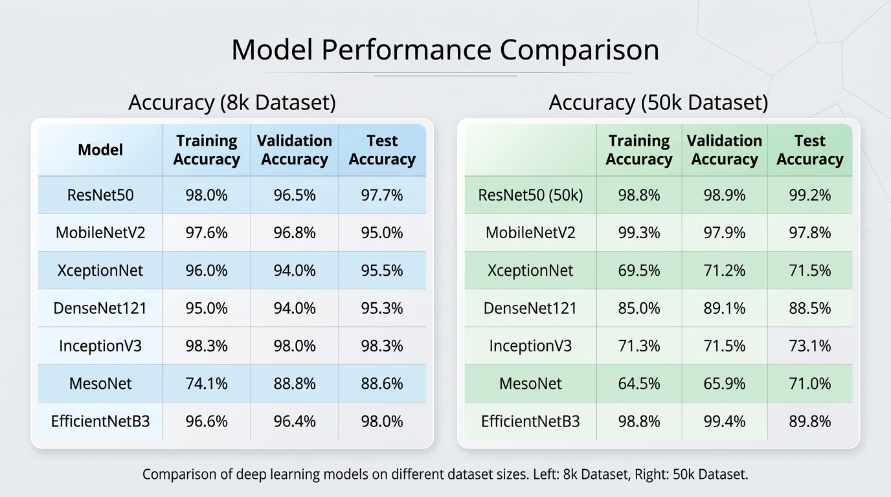

BSc THESIS • DEEPFAKE DETECTION
Deepfake Detection
Comparing CNN models to understand how well deepfake detection can generalize across datasets.
The problem
Deepfake detection tools need to generalize beyond a single dataset. A model can perform well on the data it was trained and tested on, but that does not automatically mean it will work equally well when the data changes.
What I did
I compared seven CNN models across two datasets and evaluated their performance to understand how different architectures behave in deepfake detection.
What came of it
The research became my BSc thesis. I successfully defended the thesis and received an A+.

Next work:
Dataset analysis is planned as a future part of the research.
It is not presented here as completed work.
View GitHub repository →